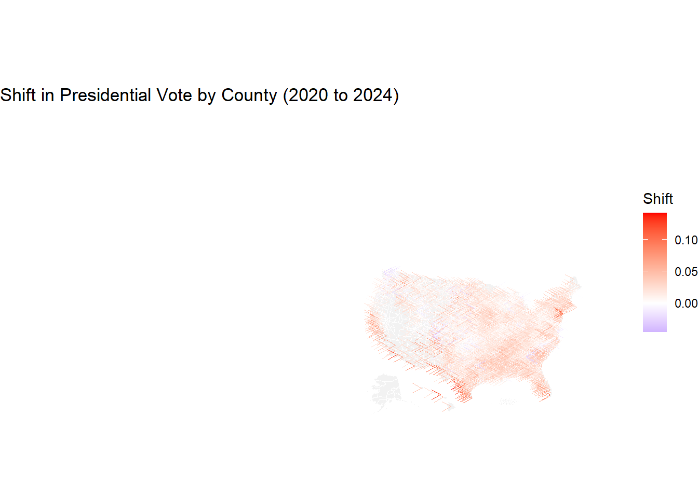

Exploring Recent Political Shifts in the United States
Since the 2024 US Presidential election, there has been a a lot of discourse in the public sphere about a “right”-ward shift in national politics and culture. Before debating what this means for the nation’s conscience, it is important to establish the actual extent of this shift. We use data gathered from various web sources to systematically analyze trends in voting. These include spatial data from the US Census, and county-level results from the 2020 and the 2024 Presidential elections scraped from Wikipedia.
Methodology
Data Acquisition
US Census Shapefile
We first download a shapefile showing the geographic boundaries of US counties (and county-equivalent areas) from the US Census Bureau. Census shapefiles are available at three resolutions; we use the finest (500K) resolution to generate the most accurate visualizations.
Code
# create function to download usa county shapefileusa_shapefile <-function(){# load required packageif(!require("sf")) {install.packages("sf")library(sf)}# create a directory if one is not already present data_dir <-"data/mp04"if(!dir.exists(data_dir)) {dir.create(data_dir, recursive =TRUE, showWarnings =FALSE) }# file paths zip_url <-"https://www2.census.gov/geo/tiger/GENZ2022/shp/cb_2022_us_county_500k.zip" zip_path <-file.path(data_dir, "cb_2022_us_county_500k.zip") shpfile_path <-file.path(data_dir, "cb_2022_us_county_500k.shp")# download if zip file doesn't existif(!file.exists(zip_path)){download.file(zip_url, zip_path, mode ="wb") }# unzip shapefile if not already extractedif(!file.exists(shpfile_path)) {unzip(zipfile = zip_path, exdir = data_dir) }# return shapefilereturn(sf::st_read(shpfile_path, quiet =TRUE))}# load shapefilecounty_shape <-usa_shapefile()
County-level Election Results
County-level results for each state were obtained from the Wikipedia US Presidential Election page for that state. I used a web-scraping function that takes a state and a year as the input, extracts the appropriate data from Wikipedia, and then cleans and formats this data for analysis.
This function can now be used to extract county-level election results from 2024 and 2020.
Code
# get election results for 2024 results_2024 <-map_dfr(state.name, ~tryCatch(get_election_results(.x, 2024),error =function(e) {message("Error in ", .x, ": ", e$message)return(NULL) }))results_2024 <- results_2024 |>filter(!is.na(county))# get election results for 2020results_2020 <-map_dfr(state.name, ~tryCatch(get_election_results(.x, 2020),error =function(e) {message("Error in ", .x, ": ", e$message)return(NULL) }))results_2020 <- results_2020 |>filter(!is.na(county))
Initial Analysis
To explore differences in voting trends, we combine the 2020 election results data with the 2024 election results data, and then merge the results with the US county shape file.
Code
join_data <- results_2024 |>inner_join(results_2020, by =c("county", "state")) |>inner_join(county_shape, by =c("county"="NAME", "state"="STATE_NAME"))
Counties that Cast the Most Votes for Trump (in absolute terms) in 2024
The counties that cast the most votes for Trump in 2024 (in absolute terms) are shown below. Los Angeles county is number one, followed by Maricopa county in Arizona, and Harris county in Texas. Of course, these are also some of the most populous counties in the nation, so it does not necessarily follow that Trump won these counties.
Code
trump24 <- join_data |>slice_max(republican1.x, n=5) |>mutate(`Donald Trump 2024 Votes`=comma(republican1.x),`Donald Trump 2024 Votes (%)`=round(republican2.x *100)) |>select(County = county,State = state,`Donald Trump 2024 Votes`,`Donald Trump 2024 Votes (%)`)kbl(trump24, caption ="Top 5 Counties That Cast the Most Votes for Trump in 2024") |>kable_styling(bootstrap_options =c("striped", "hover", "condensed", "responsive") )
Top 5 Counties That Cast the Most Votes for Trump in 2024
County
State
Donald Trump 2024 Votes
Donald Trump 2024 Votes (%)
Los Angeles
California
1,189,862
32
Maricopa
Arizona
1,051,531
51
Harris
Texas
722,695
46
Orange
California
654,815
47
Miami-Dade
Florida
605,590
55
Counties That Cast the Most Votes for Biden (as a fraction of total votes cast) in 2020
Kalawao County in Hawaii cast the most votes for Biden (as percentage of total votes) in 2020, with 95.83% of the county voting for him. The other top counties where Biden had the highest vote share are shown below.
Code
biden20 <- join_data |>slice_max(democrat2.y, n=5)|>mutate(biden_pct = democrat2.y *100)|>select(County = county,State = state,`Biden 2020 Votes (%)`= biden_pct)kbl(biden20, caption ="Top 5 Counties That Cast the Most Votes for Biden (%) in 2020") |>kable_styling(bootstrap_options =c("striped", "hover", "condensed", "responsive") )
Top 5 Counties That Cast the Most Votes for Biden (%) in 2020
County
State
Biden 2020 Votes (%)
Kalawao
Hawaii
95.83
Prince George's
Maryland
89.26
Oglala Lakota
South Dakota
88.41
Petersburg
Virginia
87.75
New York
New York
86.42
Counties With the Largest Shift Towards Trump (in absolute terms) in 2024
The counties where Trump had the largest gain in votes (in absolute terms) are shown below. The top county was Miami-Dade in Florida, where Trump gained 72,757 votes compared to his 2020 results.
Code
trump_shift <- join_data|>mutate(trump_shift = republican1.x - republican1.y) |>slice_max(trump_shift, n=5)|>select(County = county,State = state,`Trump Votes 2024`= republican1.x,`Trump Votes 2020`= republican1.y,`Trump Vote Gain`= trump_shift)kbl(trump_shift, caption ="Top 5 Counties With Largest Shift Towards Trump in 2024") |>kable_styling(bootstrap_options =c("striped", "hover", "condensed", "responsive") )
Top 5 Counties With Largest Shift Towards Trump in 2024
County
State
Trump Votes 2024
Trump Votes 2020
Trump Vote Gain
Miami-Dade
Florida
605590
532833
72757
Maricopa
Arizona
1051531
995665
55866
Queens
New York
264628
212665
51963
Los Angeles
California
1189862
1145530
44332
Nassau
New York
368117
326716
41401
State With the Largest Shift Towards Harris in 2024
The state with the “largest” shift towards Harris (and conversely, smalled towards Donald Trump) in 2024 is Utah with a -0.41% shift. The largest shift towards Harris being negative indicates that Biden outperformed Harris in 2020 in all states.
The largest county by area (in square kilometers) in this dataset is San Bernardino county in California, which has a combined land and water area of 52,072.73 square kilometers.
Code
largest <- join_data |>mutate(area = (ALAND + AWATER)/1e6)|>slice_max(area, n=3)|>select(County = county,State = state,`Area (sq km)`= area )kbl(largest, caption ="Top 3 Largest Counties by Area (sq km)") |>kable_styling(bootstrap_options =c("striped", "hover", "condensed", "responsive") )
Top 3 Largest Counties by Area (sq km)
County
State
Area (sq km)
San Bernardino
California
52072.73
Coconino
Arizona
48332.77
Mohave
Arizona
34863.42
County With the Highest Voter Density in 2020
The county with the highest voter density (as measured by total votes in a county divided by the land area in that county) is Fairfax, Virginia. It has a voter density of 0.037 per square meters, or approximately 37,000 voters per square kilometer.
Code
density_20 <- join_data |>mutate(voter_density =round(total_votes.y/ALAND, 3),ALAND =comma(ALAND))|>slice_max(voter_density, n=3)|>select(County = county,State = state,`Voter Density (2020)`= voter_density,`Total Land Area (sq m)`= ALAND )kbl(density_20, caption ="Counties with Highest Voter Density in 2020") |>kable_styling(bootstrap_options =c("striped", "hover", "condensed", "responsive") )
Counties with Highest Voter Density in 2020
County
State
Voter Density (2020)
Total Land Area (sq m)
Fairfax
Virginia
0.037
16,163,924
New York
New York
0.012
58,683,880
Kings
New York
0.005
179,684,484
County With the Largest Increase in Voter Turnout in 2024
The county with the largest increase in voter turnout (in absolute terms) from 2020 to 2024 was Montgomery county in Texas, which had an additional 35,715 people show up to vote.
Code
turnout <- join_data |>mutate(turnout_change = total_votes.x - total_votes.y ) |>filter(!is.na(turnout_change)) |>slice_max(turnout_change, n =1) |>select(County = county,State = state,`2020 Turnout`= total_votes.y,`2024 Turnout`= total_votes.x,`Turnout Increase`= turnout_change ) kbl(turnout, caption ="County with Largest Increase in Voter Turnout (2024 vs 2020)") |>kable_styling(bootstrap_options =c("striped", "hover", "condensed", "responsive"))
County with Largest Increase in Voter Turnout (2024 vs 2020)
County
State
2020 Turnout
2024 Turnout
Turnout Increase
Montgomery
Texas
271543
307258
35715
Reproducing NYT Figure
The code below attempts to reproduce the NYT figure showing a rightward shift in votes between 2020 to 2024. To compute the rightward shift for each county, we calculate the change in Republican vote share (percentage of votes).
Code
# rightward shift in votescounty_shifts <- join_data |>mutate(rep_share_2020 = republican1.y / total_votes.y,rep_share_2024 = republican1.x / total_votes.x,shift_right = rep_share_2024 - rep_share_2020 ) |>filter(!is.na(shift_right))|>group_by(county, state) |>summarise(shift_right =mean(shift_right, na.rm =TRUE), .groups ="drop")# reposition hawaii and alaskageo_shifted <-shift_geometry( county_shape,position ="below", # or "outside"preserve_area =FALSE)# join with county shift datamap_data <- geo_shifted |>left_join(county_shifts, by =c("NAME"="county", "STATE_NAME"="state"))# get centroids and arrowsmap_data <- map_data |>mutate(centroid =st_centroid(geometry)) |>mutate(x =st_coordinates(centroid)[,1],y =st_coordinates(centroid)[,2],xend = x + shift_right *10000, yend = y )# plot mapggplot() +geom_sf(data = map_data, fill ="gray95", color ="white") +geom_segment(data = map_data |>filter(!is.na(shift_right)),aes(x = x, y = y, xend = xend, yend = yend, color = shift_right),arrow =arrow(length =unit(0.1, "inches")),size =0.3 ) +scale_color_gradient2(low ="blue", mid ="white", high ="red",midpoint =0,name ="Shift" ) +coord_sf(expand =FALSE) +# <<< this line fixes layouttheme_void() +ggtitle("Shift in Presidential Vote by County (2020 to 2024)")
Warning: Using `size` aesthetic for lines was deprecated in ggplot2 3.4.0.
ℹ Please use `linewidth` instead.

Source Code
---title: "Exploring Recent Political Shifts in the USA"author: Vibha Gokhaleformat: html: code-tools: true code-fold: true toc: true toc-location: left number-sections: false toc-depth: 4execute: eval: true messages: false warnings: false---```{r load_packages, include=FALSE}library(tidyverse)library(sf)library(httr2)library(rvest)library(janitor)library(kableExtra)library(xml2)library(scales)library(knitr)library(gt)library(tigris)```## Exploring Recent Political Shifts in the United StatesSince the 2024 US Presidential election, there has been a a lot of discourse in the public sphere about a "right"-ward shift in national politics and culture. Before debating what this means for the nation's conscience, it is important to establish the actual extent of this shift. We use data gathered from various web sources to systematically analyze trends in voting. These include spatial data from the US Census, and county-level results from the 2020 and the 2024 Presidential elections scraped from Wikipedia.## Methodology### Data Acquisition#### US Census ShapefileWe first download a *shapefile* showing the geographic boundaries of US counties (and county-equivalent areas) from the US Census Bureau. Census shapefiles are available at three resolutions; we use the finest (500K) resolution to generate the most accurate visualizations. ```{r download_us_county_shp}# create function to download usa county shapefileusa_shapefile <- function(){ # load required package if(!require("sf")) {install.packages("sf") library(sf)} # create a directory if one is not already present data_dir <- "data/mp04" if(!dir.exists(data_dir)) { dir.create(data_dir, recursive = TRUE, showWarnings = FALSE) } # file paths zip_url <- "https://www2.census.gov/geo/tiger/GENZ2022/shp/cb_2022_us_county_500k.zip" zip_path <- file.path(data_dir, "cb_2022_us_county_500k.zip") shpfile_path <- file.path(data_dir, "cb_2022_us_county_500k.shp") # download if zip file doesn't exist if(!file.exists(zip_path)){ download.file(zip_url, zip_path, mode = "wb") } # unzip shapefile if not already extracted if(!file.exists(shpfile_path)) { unzip(zipfile = zip_path, exdir = data_dir) } # return shapefile return(sf::st_read(shpfile_path, quiet = TRUE))}# load shapefilecounty_shape <- usa_shapefile()```#### County-level Election ResultsCounty-level results for each state were obtained from the Wikipedia US Presidential Election page for that state. I used a web-scraping function that takes a state and a year as the input, extracts the appropriate data from Wikipedia, and then cleans and formats this data for analysis. The code below shows this function:```{r get_election_results_fn}get_election_results <- function(state_name, year) { data_dir <- "data/mp04" if (!dir.exists(data_dir)) dir.create(data_dir, recursive = TRUE, showWarnings = FALSE) url_path <- case_when( state_name == "Washington" ~ paste0(year, "_United_States_presidential_election_in_Washington_(state)"), TRUE ~ paste0(year, "_United_States_presidential_election_in_", gsub(" ", "_", state_name)) ) resp <- request("https://en.wikipedia.org/wiki/") |> req_url_path_append(url_path) |> req_perform() html <- resp_body_html(resp) tables <- html |> html_elements("table.wikitable") |> html_table() if (length(tables) == 0) { # for those states without wikitables tables <- html |> html_elements("table") |> html_table()} county_table <- NULL for (table in tables) { if (any(grepl("County|Parish|Borough|Municipality|Census Area", names(table), ignore.case = TRUE))) { county_table <- table break } } if (is.null(county_table) || nrow(county_table) == 0) { warning("No usable county-level data found for ", state_name, " ", year) return(data.frame(state = state_name)) } county_table <- janitor::clean_names(county_table) if (!any(grepl("county|parish|borough|municipality|census_area", names(county_table), ignore.case = TRUE))) { warning("No 'county'-like column in ", state_name) return(data.frame(state = state_name)) } clean_table <- county_table |> rename( county = matches("county|parish|borough|municipality|census_area", ignore.case = TRUE), republican = matches("trump|republican", ignore.case = TRUE), democrat = matches("biden|harris|democratic", ignore.case = TRUE), other_party = matches("other|various", ignore.case = TRUE), total_votes = matches("total|total_votes", ignore.case = TRUE) ) |> filter( !is.na(county), !str_detect(county, "Total|Statewide|^#|County"), str_detect(county, "^[A-Za-z]") ) if (!"state" %in% names(clean_table)) clean_table$state <- state_name if (!"county" %in% names(clean_table)) { warning("Missing 'county' column after renaming in ", state_name) return(data.frame(state = state_name)) } clean_table <- clean_table |> mutate(across( -c(county, state), ~ ifelse( grepl("%", .), as.numeric(gsub("%", "", .)) / 100, suppressWarnings(as.numeric(gsub("[^0-9]", "", .))) ) )) return(clean_table)}```This function can now be used to extract county-level election results from 2024 and 2020. ```{r run_get_election, message=FALSE, warning=FALSE}# get election results for 2024 results_2024 <- map_dfr(state.name, ~tryCatch( get_election_results(.x, 2024), error = function(e) { message("Error in ", .x, ": ", e$message) return(NULL) }))results_2024 <- results_2024 |> filter(!is.na(county))# get election results for 2020results_2020 <- map_dfr(state.name, ~tryCatch( get_election_results(.x, 2020), error = function(e) { message("Error in ", .x, ": ", e$message) return(NULL) }))results_2020 <- results_2020 |> filter(!is.na(county))```### Initial AnalysisTo explore differences in voting trends, we combine the 2020 election results data with the 2024 election results data, and then merge the results with the US county shape file.```{r join_data}join_data <- results_2024 |> inner_join(results_2020, by = c("county", "state")) |> inner_join(county_shape, by = c("county" = "NAME", "state" = "STATE_NAME"))```#### Counties that Cast the Most Votes for Trump (in absolute terms) in 2024The counties that cast the most votes for Trump in 2024 (in absolute terms) are shown below. Los Angeles county is number one, followed by Maricopa county in Arizona, and Harris county in Texas. Of course, these are also some of the most populous counties in the nation, so it does not necessarily follow that Trump won these counties.```{r most_trump_votes_2024}trump24 <- join_data |> slice_max(republican1.x, n=5) |> mutate(`Donald Trump 2024 Votes` = comma(republican1.x), `Donald Trump 2024 Votes (%)` = round(republican2.x * 100)) |> select( County = county, State = state, `Donald Trump 2024 Votes`, `Donald Trump 2024 Votes (%)`)kbl(trump24, caption = "Top 5 Counties That Cast the Most Votes for Trump in 2024") |> kable_styling( bootstrap_options = c("striped", "hover", "condensed", "responsive") )```#### Counties That Cast the Most Votes for Biden (as a fraction of total votes cast) in 2020Kalawao County in Hawaii cast the most votes for Biden (as percentage of total votes) in 2020, with 95.83% of the county voting for him. The other top counties where Biden had the highest vote share are shown below.```{r biden20_pct}biden20 <- join_data |> slice_max(democrat2.y, n=5)|> mutate(biden_pct = democrat2.y * 100)|> select( County = county, State = state, `Biden 2020 Votes (%)` = biden_pct)kbl(biden20, caption = "Top 5 Counties That Cast the Most Votes for Biden (%) in 2020") |> kable_styling( bootstrap_options = c("striped", "hover", "condensed", "responsive") )```#### Counties With the Largest Shift Towards Trump (in absolute terms) in 2024The counties where Trump had the largest gain in votes (in absolute terms) are shown below. The top county was Miami-Dade in Florida, where Trump gained 72,757 votes compared to his 2020 results.```{r trump_shift_24}trump_shift <- join_data|> mutate(trump_shift = republican1.x - republican1.y) |> slice_max(trump_shift, n=5)|> select( County = county, State = state, `Trump Votes 2024` = republican1.x, `Trump Votes 2020` = republican1.y, `Trump Vote Gain` = trump_shift)kbl(trump_shift, caption = "Top 5 Counties With Largest Shift Towards Trump in 2024") |> kable_styling( bootstrap_options = c("striped", "hover", "condensed", "responsive") )```#### State With the Largest Shift Towards Harris in 2024The state with the "largest" shift towards Harris (and conversely, smalled towards Donald Trump) in 2024 is Utah with a -0.41% shift. The largest shift towards Harris being negative indicates that Biden outperformed Harris in 2020 in all states.```{r harris_shift}state_shift <- join_data |> group_by(state) |> summarise( harris_votes = sum(democrat1.x, na.rm = TRUE), trump_votes_2024 = sum(republican1.x, na.rm = TRUE), total_votes_2024 = harris_votes + trump_votes_2024, biden_votes = sum(democrat1.y, na.rm = TRUE), trump_votes_2020 = sum(republican1.y, na.rm = TRUE), total_votes_2020 = biden_votes + trump_votes_2020, harris_pct = harris_votes / total_votes_2024 * 100, biden_pct = biden_votes / total_votes_2020 * 100, shift_to_harris = harris_pct - biden_pct ) |> filter(!is.na(shift_to_harris)) |> arrange(desc(shift_to_harris)) state_shift |> slice(1) |> select(State = state, `Shift Toward Harris (%)` = shift_to_harris) |> gt() |> fmt_number(columns = `Shift Toward Harris (%)`, decimals = 2)```#### The Largest County by AreaThe largest county by area (in square kilometers) in this dataset is San Bernardino county in California, which has a combined land and water area of 52,072.73 square kilometers.```{r largest_county}largest <- join_data |> mutate(area = (ALAND + AWATER)/1e6)|> slice_max(area, n=3)|> select( County = county, State = state, `Area (sq km)` = area )kbl(largest, caption = "Top 3 Largest Counties by Area (sq km)") |> kable_styling( bootstrap_options = c("striped", "hover", "condensed", "responsive") )```#### County With the Highest Voter Density in 2020The county with the highest voter density (as measured by total votes in a county divided by the land area in that county) is Fairfax, Virginia. It has a voter density of 0.037 per square meters, or approximately 37,000 voters per square kilometer. ```{r voter_density_2020}density_20 <- join_data |> mutate(voter_density = round(total_votes.y/ALAND, 3), ALAND = comma(ALAND))|> slice_max(voter_density, n=3)|> select( County = county, State = state, `Voter Density (2020)` = voter_density, `Total Land Area (sq m)` = ALAND )kbl(density_20, caption = "Counties with Highest Voter Density in 2020") |> kable_styling( bootstrap_options = c("striped", "hover", "condensed", "responsive") )```#### County With the Largest Increase in Voter Turnout in 2024The county with the largest increase in voter turnout (in absolute terms) from 2020 to 2024 was Montgomery county in Texas, which had an additional 35,715 people show up to vote. ```{r increased_turnout}turnout <- join_data |> mutate( turnout_change = total_votes.x - total_votes.y ) |> filter(!is.na(turnout_change)) |> slice_max(turnout_change, n = 1) |> select( County = county, State = state, `2020 Turnout` = total_votes.y, `2024 Turnout` = total_votes.x, `Turnout Increase` = turnout_change ) kbl(turnout, caption = "County with Largest Increase in Voter Turnout (2024 vs 2020)") |> kable_styling(bootstrap_options = c("striped", "hover", "condensed", "responsive"))```### Reproducing NYT FigureThe code below attempts to reproduce the NYT figure showing a rightward shift in votes between 2020 to 2024. To compute the rightward shift for each county, we calculate the change in Republican vote share (percentage of votes). ```{r nyt_map}# rightward shift in votescounty_shifts <- join_data |> mutate( rep_share_2020 = republican1.y / total_votes.y, rep_share_2024 = republican1.x / total_votes.x, shift_right = rep_share_2024 - rep_share_2020 ) |> filter(!is.na(shift_right))|> group_by(county, state) |> summarise(shift_right = mean(shift_right, na.rm = TRUE), .groups = "drop")# reposition hawaii and alaskageo_shifted <- shift_geometry( county_shape, position = "below", # or "outside" preserve_area = FALSE)# join with county shift datamap_data <- geo_shifted |> left_join(county_shifts, by = c("NAME" = "county", "STATE_NAME" = "state"))# get centroids and arrowsmap_data <- map_data |> mutate(centroid = st_centroid(geometry)) |> mutate( x = st_coordinates(centroid)[,1], y = st_coordinates(centroid)[,2], xend = x + shift_right * 10000, yend = y )# plot mapggplot() + geom_sf(data = map_data, fill = "gray95", color = "white") + geom_segment( data = map_data |> filter(!is.na(shift_right)), aes(x = x, y = y, xend = xend, yend = yend, color = shift_right), arrow = arrow(length = unit(0.1, "inches")), size = 0.3 ) + scale_color_gradient2( low = "blue", mid = "white", high = "red", midpoint = 0, name = "Shift" ) + coord_sf(expand = FALSE) + # <<< this line fixes layout theme_void() + ggtitle("Shift in Presidential Vote by County (2020 to 2024)")```